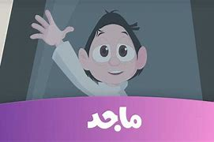
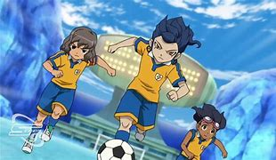
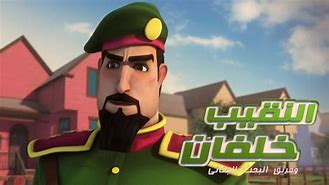
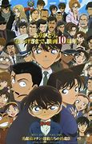
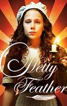
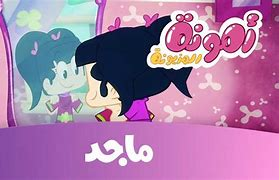

كرتون كسلان
كسلان هو برنامج رسوم متحركة إماراتي من إنتاج شركة
ماجد
للترفيه بعام 2015، وهو كرتون موجه للأطفال ما
بين السادسة حتى الثانية عشر. تدور أحداثه حول طفل إماراتي عمره 12 عاماً، لدى كسلان العديد من
الأفكار
والمشاريع التي غالبا ما يفشل في تحقيقها بسبب كسله وقلة تركيزه وشعوره بالملل سريعاً ورغم ذلك
يحب
الرياضة بجميع أنواعها.

كرتون أبطال الكرة الفرسان 3
يحكي عن فريق يحلم بأن يصبح الأول في البلاد في كرة
القدم وفي أثناء هذا يواجهون بعض المشاكل ولكنهم يتغلبون عليها.

النقيب خلفان
النقيب خلفان هو مسلسل كرتوني إماراتي من إنتاج شركة ماجد للترفيه، ويعرض حاليا على قناة ماجد
للأطفال.

المحقق كونان
اهو الموسم الأول من سلسلة المحقق كونان (باليابانية: 名探偵コナン، تُنطق ميهتانتيه كۆنان أي المحقق
العظيم كونان) تُرجمت رسميًا إلى المُحقق كونان، وهي سلسلة مانغا للكاتب غوشو أوياما حُولِّت
إلى مسلسل أنيمي وحلقات أوفا وأفلام أنمي وألعاب فيديو ووسائط أخرى يابانية وقد بدأ عرض السلسلة
من 8 يناير 1996 ولغاية 12 أغسطس 1996.

هتي فيذر
هيتي فيذر هي سلسلة درامية بريطانية لكل الفئات العمرية، تركز على حياة الشخصية الرئيسية التي تم
التخلي عنها عندما كانت طفلة، تعيش أولاً في مستشفى Foundling في لندن، وتعمل لاحقًا كخادمة
لعائلة ثرية في منزلهم.

أمونة المزيونة
أمونة المزيونة أو أمونة هو مسلسل تلفزيوني، مرسوم، إماراتي، من تأليف عامر كوخ، لصالح قناة ماجد
للترفيه، بدأ في 2015. أمونة. كتابة, عامر كوخ.